Welcome to my mobile programming application portfolio. I specialize in designing declarative user interfaces with Jetpack Compose, managing robust architecture pipelines, and optimizing embedded persistent workflows on the Android operating system.
I choose to dedicate my application infrastructure development towards tracking and reducing localized food waste because connecting community food surpluses with vulnerable citizens effectively bridges structural inequalities and safeguards basic human welfare options.
Exploratory implementation of fundamental declarative view component structures using Jetpack Compose modifiers, surface parameters, and text properties.
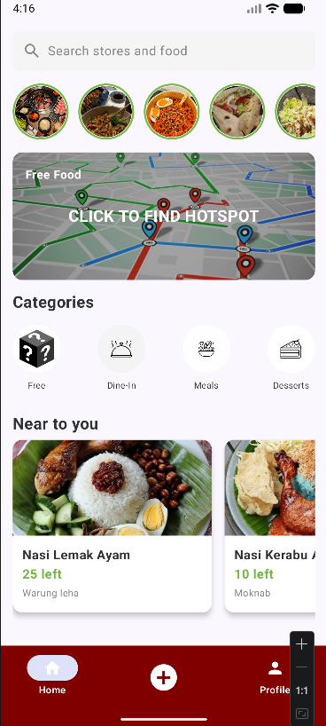
Home ScreenIntegrating active component state hooks via state wrappers to respond cleanly to dynamic runtime inputs.
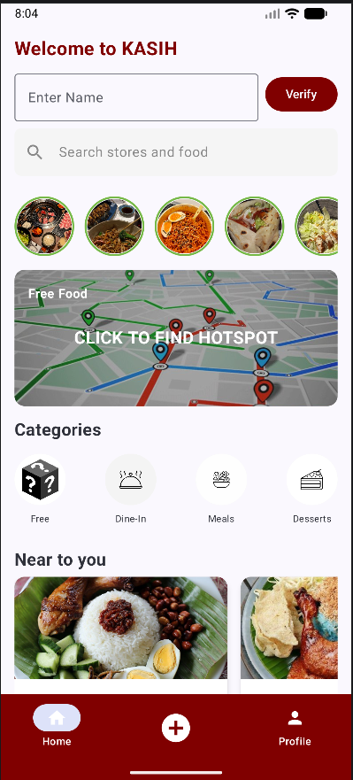
Form Setup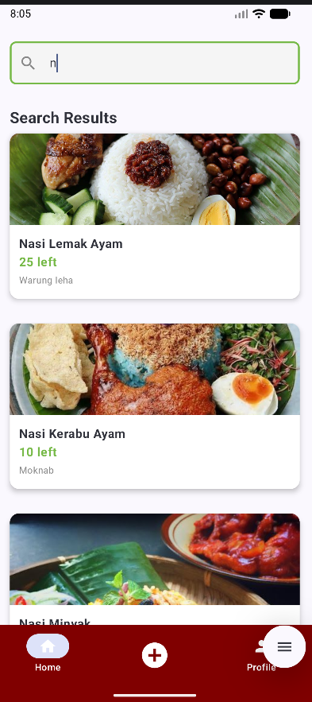
State VerificationPolishing the visual system layer by configuring structural theme layouts, typography variations, and explicit color palettes.
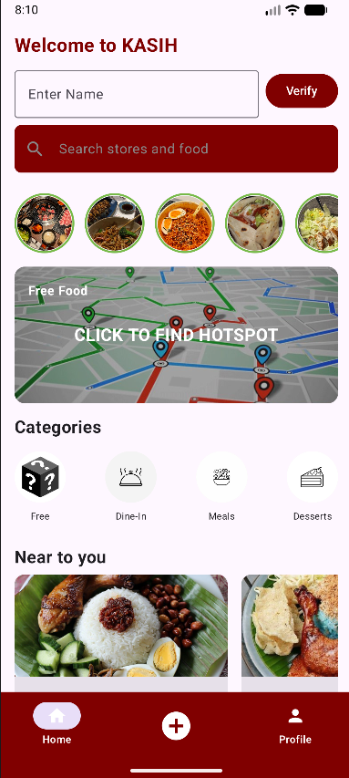
Theme ColorsArchitecting multi-destination client-side navigation routing networks while managing safe parameter passing pipelines.
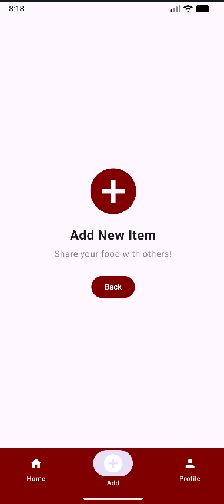
Active Routes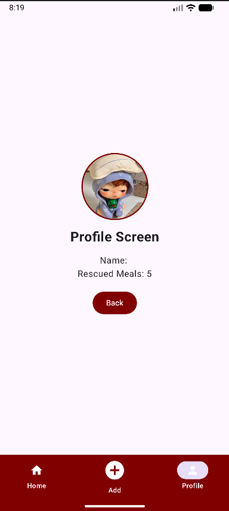
Active RoutesStructuring transactional offline caching logic using Jetpack Room access object interfaces and SQLite mappings.
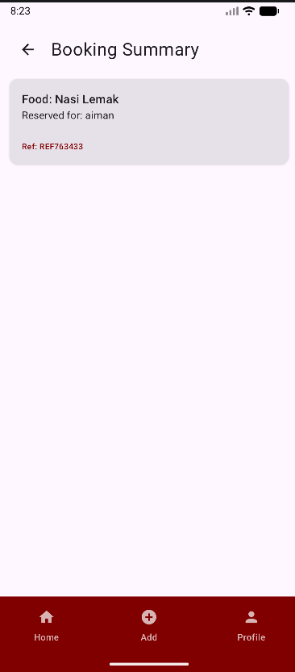
Entity Schema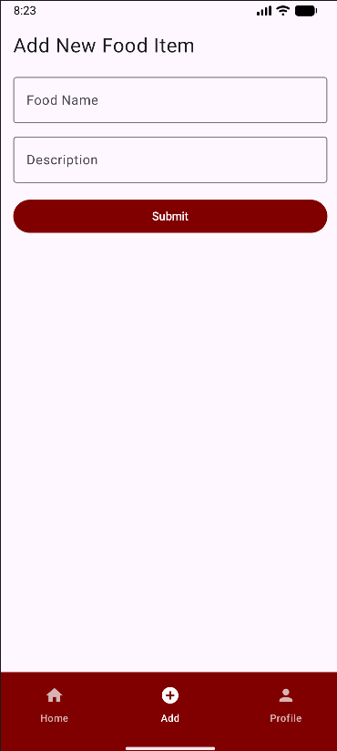
SQLite TablesProblem Statement: Localized community kitchens face difficulties broadcasting immediate soup-ration availability metrics, resulting in food deterioration or missed rescue distributions.
View on GitHub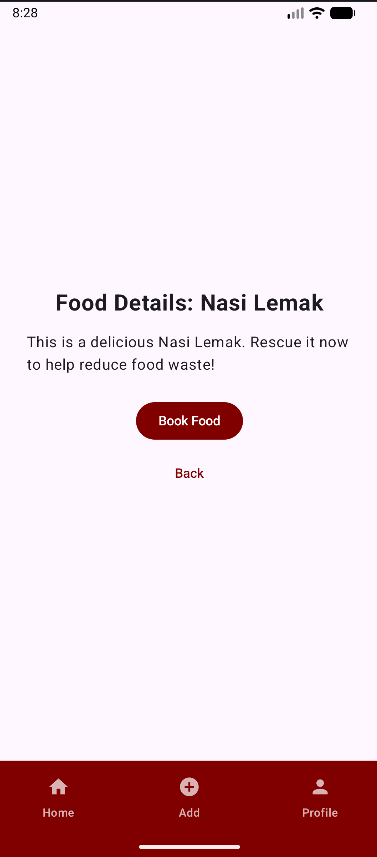
Main Dashboard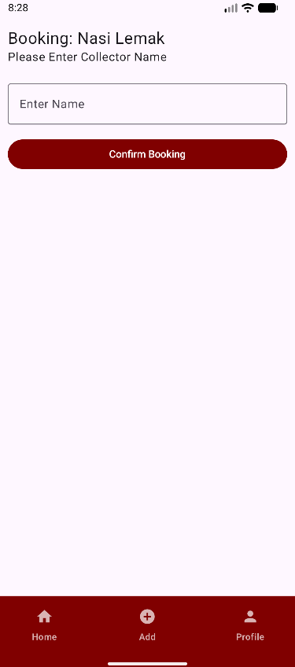
Food DetailsProblem Statement: Fragmented local networks lack integrated systems that bridge offline operations, remote cloud sharing tracking, and precise geographical distribution mapping.
View on GitHub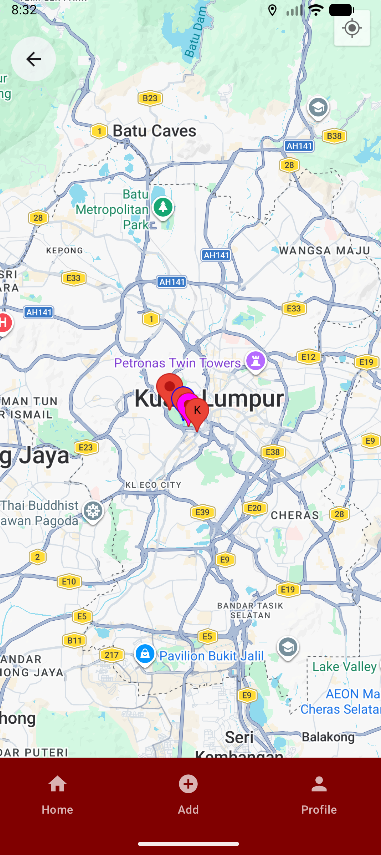
MapScreen GPS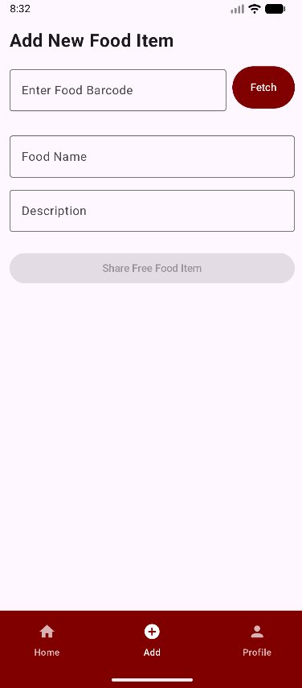
Firebase Cloud SyncMy learning trajectory from crafting crude UI layout widgets in Lab 1 to assembling a fully-orchestrated, persistent, hardware-aware cloud ecosystem in Project 2 has been thoroughly transformative. Overcoming architectural bottlenecks like background threading issues, race conditions during remote cloud syncing, and managing location map lifecycle events forced me to thoroughly analyze asynchronous Android execution pipelines.
This extensive technical journey shifted my development approach from simply hacking isolated frontend views together to building resilient, highly predictable software architectures using established MVVM engineering patterns. Seeing my code actively contribute a real-world technological solution toward solving SDG 2: Zero Hunger hunger disparities has solidified my passion for developing purpose-driven mobile applications.
AI Assistance Acknowledgement: Generative AI workflows were utilized for testing optimization edge cases, validating room entity migration steps, and structuring code architectures to match course requirements.